Pinch Protection Triggered
Pinch Protection Triggered
Cars affected
Saab 9-3 equipped with pinch protection:
4D/5D: M03-M06
CV: M04-M06
Symptom description
The pinch protection deploys before the window is closed.
Procedure M03
1. Carry out checking and fault diagnosis M03-M04, see below.
NOTE:
- If the door control module has been replaced and is M04- then the window lift must be from M04-.
- If the window lift has been replaced and is M04- then the door control module must be from M04-.
- In order to distinguish the window lift between M03 and M04- check the paint on cable pulleys on the upper guide rails.
- M03= White
- M04= Light brown/beige
- Check the above in order to avoid the pinch protection incorrectly deploying.
2. If the problem remains following the above fault diagnosis then the pinch protection can be deactivated using Tech 2 (version 127.000 or later) under the menu entitled Fault diagnosis - Model year 2003 - Saab 9-3 Sport (9440) - All - Service - Activate/Deactivate pinch protection.
NOTE: This deactivation means that the "Express up" function is deactivated.
Procedure M04-M06
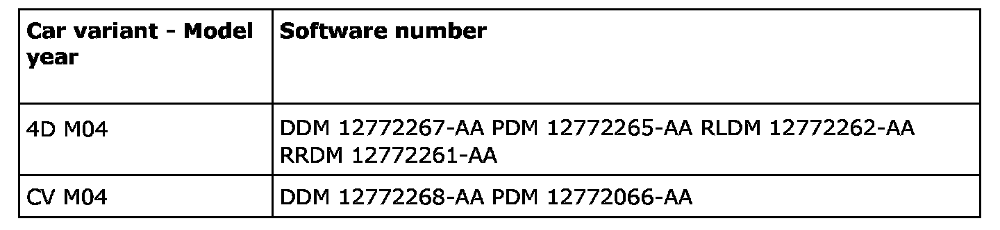
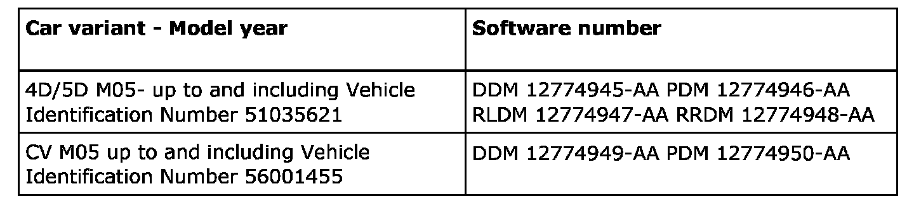
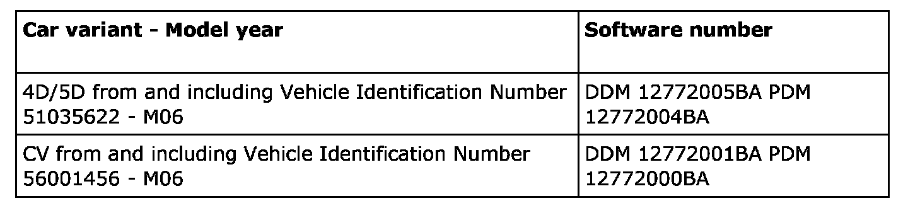
1. Check the door control module software number.
If the software number is in accordance with those specified above or newer:
4D, M04: Carry out checking and fault diagnosis M03-M04, see below.
4D/5D M05-M06: Proceed to step 2.
CV: Carry out the procedure for CV, see below.
If the software number is older than those specified above:
Connect Tech 2 (version 126.000 or later) and perform the update. The software is available on IRIS from and including TIS2000 edition 2006-3 update 1. Add the door control module with Tech 2 under the menu, All - Add/Remove. Check the function.
4D, M04: If the fault remains, carry out checking and fault diagnosis M03-M04, see below.
4D/5D M05-M06: If the fault remains proceed to step 2.
CV: If the fault remains, carry out the procedure for CV, see below.
If the fault is rectified then no additional steps are necessary.
2. Raise and lower the window several times. If the pinch protection deploys each time the window is raised, proceed to step 8. If the pinch protection deploys sporadically, proceed to step 3.
3. If the pinch protection deploys while raising from the bottom position, proceed to step 4. If the pinch protection deploys during raising following lowering, but not to the bottom position, proceed to step 6.
4. Perform the adaptation test. Start the test in Tech 2 under Body - Power Windows - Driver's door/Passenger door - Miscellaneous - Adaptation test window system.
The windows will now be lowered and raised 10 times in order to test the adaptation performance and to read the clamping forces.
The test is now complete.
5. If the test is OK, proceed to step 17.
In the event of error messages, proceed to step 5a.
5.a. Error message: "Slow mechanical system". Max. clamping force is higher than 70, the window runs slowly.
Check the mechanical system in accordance with steps 10-16. Use the read value "Position of max. force (mm)" in order to locate the problem area.
Check the adjustments using the read values. Then proceed to step 17.
5.b. Error message: "Mechanical problem, adjust window lift/window seal".
Check the mechanical system in accordance with steps 10-16.
Check the adjustments using the read values. Then proceed to step 17.
5.c. Error message: "Poor adaptation performance". Adaptation approved less than 8 out of 10 times. The system cannot adapt itself.
Carry out the programming of the window in accordance with step 17 and repeat the adaptation test. Note that several messages may arise at the same time. In which case carry out the mechanical fault diagnosis first.
6. Carry out the Window opening/Closing test. Start the test in Tech 2 under "Body - Power Windows - Driver's door/Passenger door - Miscellaneous - Window opening/Closing test.
The test is used to check whether the window is unsteady during the change of direction which creates the so-called "drawer effect". Tech 2 opens the window to the selected opening point and closes it again. Start the test, open 1/3, 1/2 and 2/3.
If the test is OK, proceed to step 17.
In the event of error messages, proceed to step 7.
7. Error message: "Check/adjust window anchorage point/window lift". The difference in clamping force for the first 20 mm is higher than 20, check the window anchorage point/window lift.
Carry out step 6 again and check the improvements.
8. Read out the following read values in Tech 2 under Read Values - Advanced, miscellaneous:
8.a. False pinch protection activation during whole cycle: Lower the window to the bottom. Activate "Express up" and check the read values following pinch protection activation.
Check the mechanics in accordance with steps 10-17. Use "Position of max. force" to locate the problem area.
8.b. False pinch protection activation at turning centre of window: Lower the window, stop and raise it before it has reached the bottom position. Read off the values following pinch protection activation.
Check the window anchorage point if "Force difference first 20 mm" is higher than 20.
In the event of a value above 20, carry out step 14.
9. Check the improvements.
10. Check the glass guide seal on both sides of the window. Check the following:
10.a. that the guide in the seal (A) is clean. Check that no rubbish has become caught. Clean the seal if necessary.
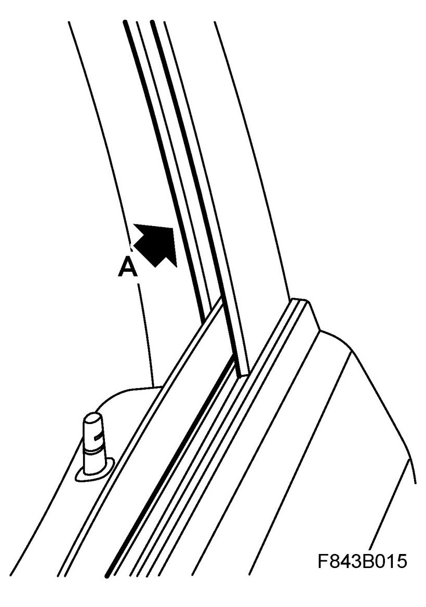
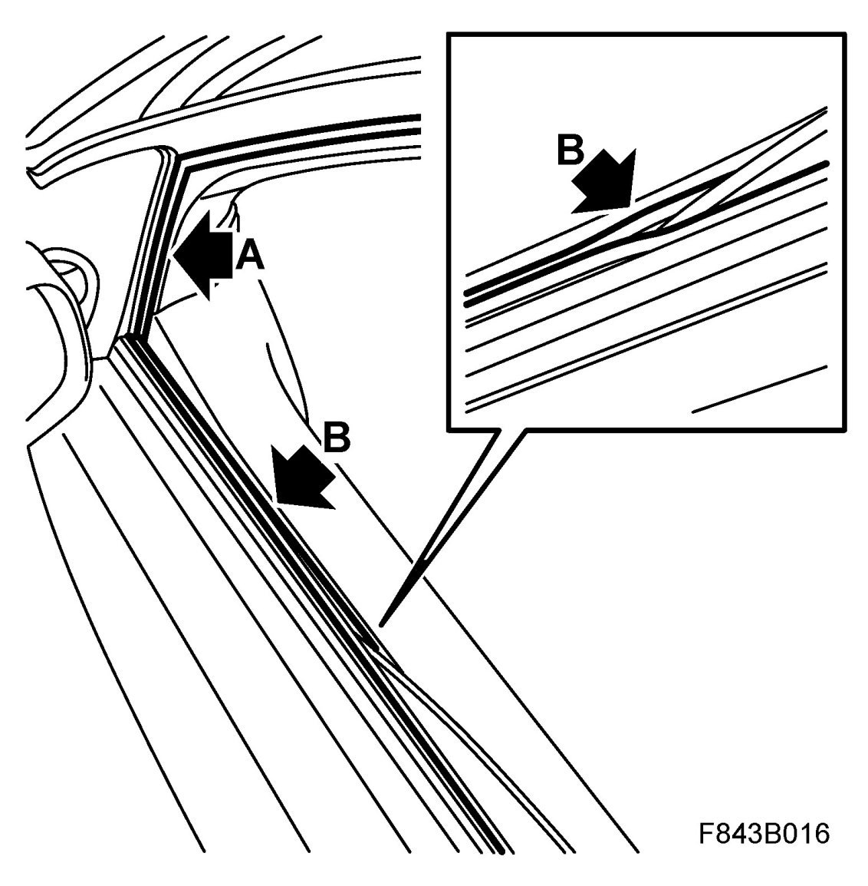
10.b. that the seal is not damaged or creased. If the seal is damaged or creased then it must be replaced.
11. Check the outer and inner window seal (B). Check with the window down that the seal is not damaged or creased.
If the seal is damaged or creased then it must be replaced.
12. Raise and lower the window. Use the blocking button if the pinch protection has deployed.
Check that the window runs in an even line without a tipping or vibrating movement.
If the window is OK, proceed to step 15.
If the window is not OK, proceed to step 13.
13. Remove the door trim in accordance with WIS - Interior equipment - Adjustment/Replacement - Door trim.
14. Check the following:
14.a. that the window lift and motor are fastened securely without play. Adjust if necessary.
14.b. that the window is fastened securely and is not unsteady in the slider when it is raised and lowered. The window must be in contact with the rubber coated mountings (B). (Illustration seen from the outside).
Adjust by undoing the screws, then press the window down, back.
Tightening torque 9 Nm (7 lbf ft)
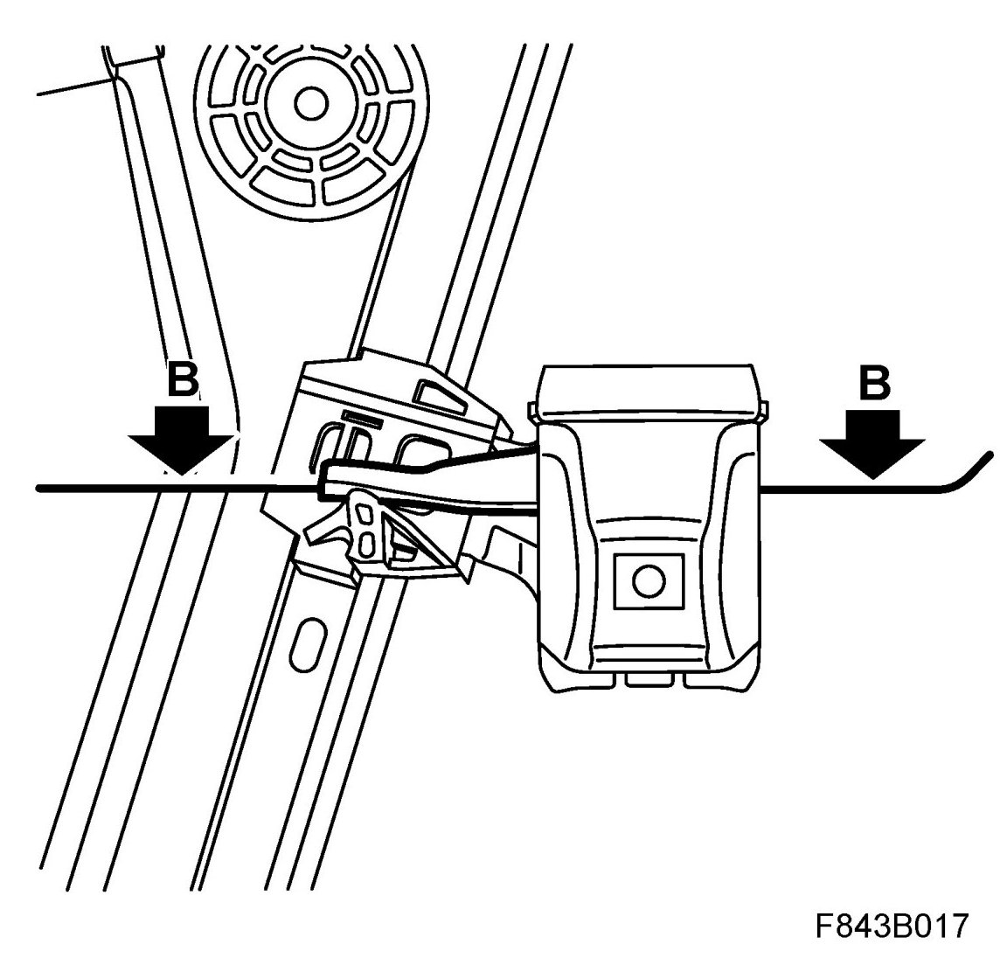
15. Remove the door trim in accordance with WIS - Interior equipment - Adjustment/Replacement - Door trim. Check contacts, connectors with regard to oxidation, dislodged pins and pin clamping force.
16. Fit the door trim in accordance with WIS - Interior equipment - Adjustment/Replacement - Door trim.
17. Carry out pinch protection programming as follows:
NOTE: Only one control module may be calibrated at a time owing to voltage variations.
17.a. Close the window.
17.b. Reset the pinch protection by removing and fitting fuse F5 from the instrument panel electrical centre (IPEC). The pinch protection for both door modules is now reset and both front windows can be programmed.
17.c. Start the car.
17.d. Lower the window fully. Hold the button depressed during the entire operation.
17.e. Raise the window fully. Hold the button up during the entire operation. Wait for at least 1 second when the window is in the top position.
17.f. Lower the window fully. Hold the button depressed during the entire operation.
17.g. Raise the window fully. Hold the button up during the entire operation. Wait for at least 1 second when the window is in the top position.
17.h. When calibration has been completed an audible confirmation is heard. In the event that there is no audible confirmation, repeat the procedure.
Checking and fault diagnosis M03-M04, 4D
1. Check the glass guide seal on both sides of the window. Check the following:
1.A. that the guide in the seal is clean. Check that no rubbish has become caught. Clean the seal if necessary.
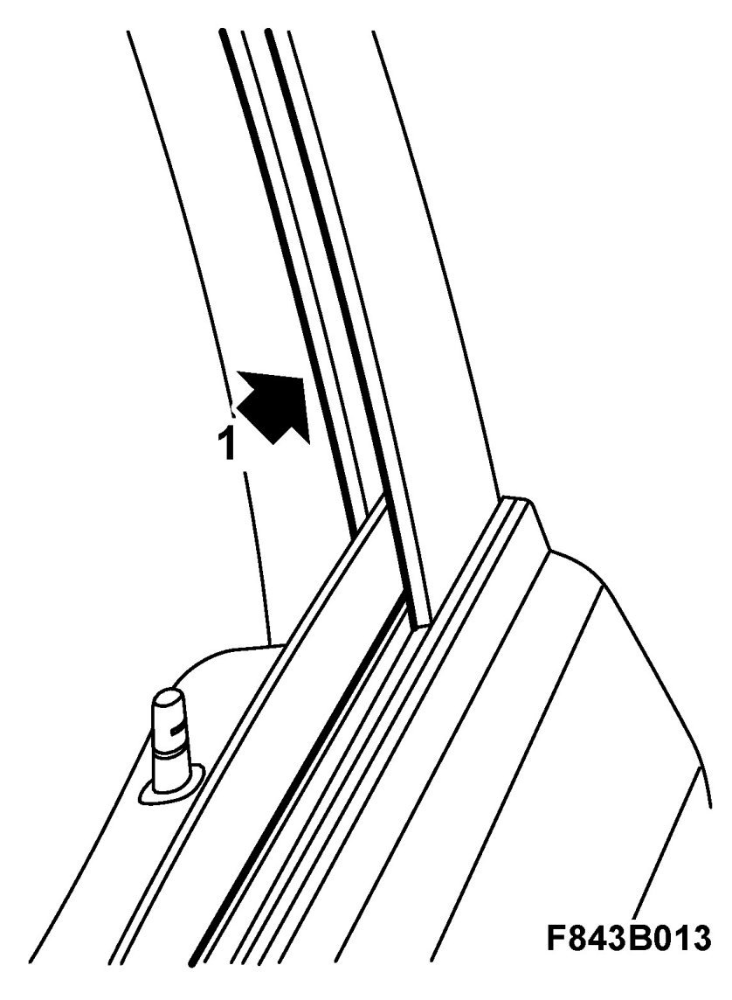
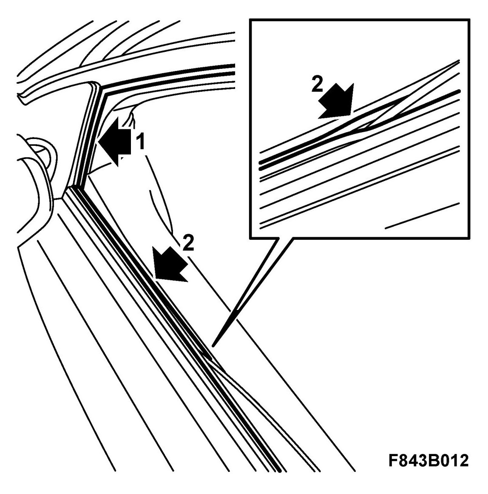
1.B. that the seal is not damaged or creased. If the seal is damaged or creased then it must be replaced.
2. Check the outer and inner window seals. Check with the window wound down that the seal is not damaged or creased. If the seal is damaged or creased it must be replaced.
3. Raise and lower the window. Use the blocking button if the pinch protection has deployed. Check that the window runs in an even line without a tipping or vibrating movement. If the window is OK, proceed to step 6. If the window is not OK, proceed to step 4.
4. Remove the door trim in accordance with WIS - Interior equipment - Adjustment/Replacement - Door trim.
5. Check the following:
5.A. that the window lift and motor are fastened securely without play. Adjust if necessary.
5.B. that the window is fastened securely and is not unsteady in the slider when it is raised and lowered. The window must be in contact with the rubber coated mountings. (Illustration seen from the outside). Adjust by undoing the screws, press the window down, back.
Tightening torque 9 Nm (7 lbf ft)
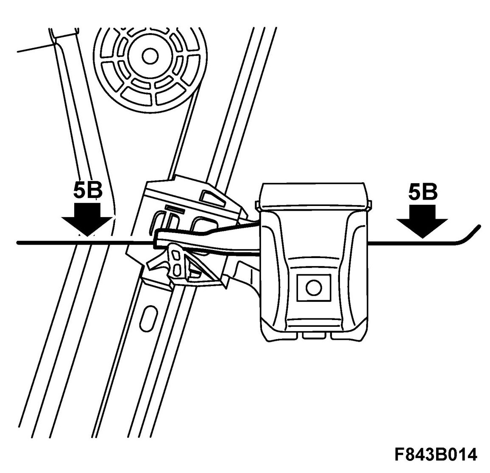
6. Remove the door trim. Check contacts, connectors with regard to oxidation, dislodged pins and pin clamping force.
7. Fit the door trim in accordance with WIS - Interior equipment - Adjustment/Replacement - Door trim.
8. Reset the pinch protection by removing and fitting fuse F5 from the instrument panel electrical centre (IPEC) (applies to front door control module) or fuse 21 in the rear electrical centre (REC) (applies to rear door control module). Carry out pinch protection programming in accordance with WIS - Body - Doors and locks - Adjustment/Replacement - Calibration of pinch protection.
Procedure, CV
1. Remove fuse F5 from the instrument panel electrical centre (IPEC).
2. Fit the fuse.
NOTE: The pinch protection for door windows has now lost the previously programmed values. Pinch protection will be reprogrammed when the antipinch test is carried out.
3. Carry out the anti-pinch test in Tech 2 under the menu, Body - Power Windows - Driver's door/Passenger door - Miscellaneous - Anti-pinch test Convertible. Use Tech 2 version 116.000 or later.
4. If the results of the Tech 2 anti-pinch test are positive, no further action is necessary.
5. If the Tech 2 anti-pinch test fails, proceed to step 6 and adjust the window(s) specified.
6. Lower the door window fully.
7. Remove the retaining bolt from the inner cover of the door mirror base and prize the cover from the door. Use 82 93 474 Removal tool.
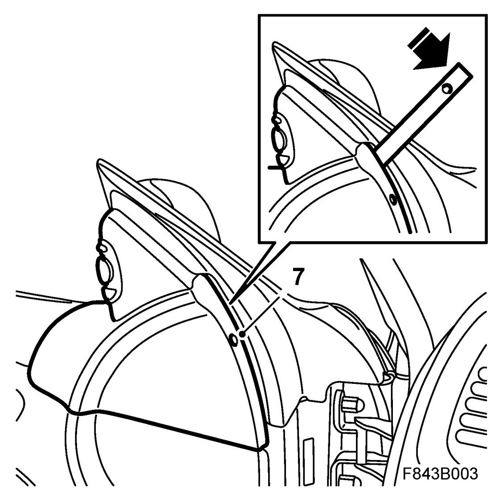
8. Remove the inner cover of the door mirror base by lifting the cover straight up.
9. Driver's side: Unplug the connector from the door mirror switch.
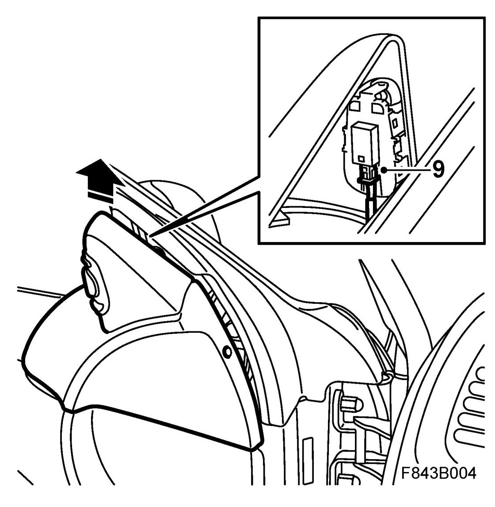
10. Raise the window to its closed position.
11. Undo the four retaining bolts.
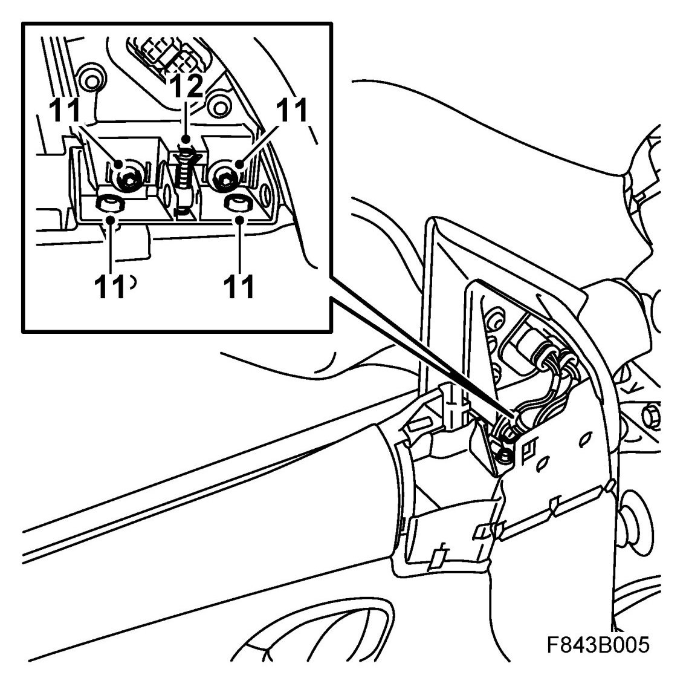
12. Undo and remove the adjuster screw.
13. Adjust the door mirror base by holding it so that it is in line with the door window.
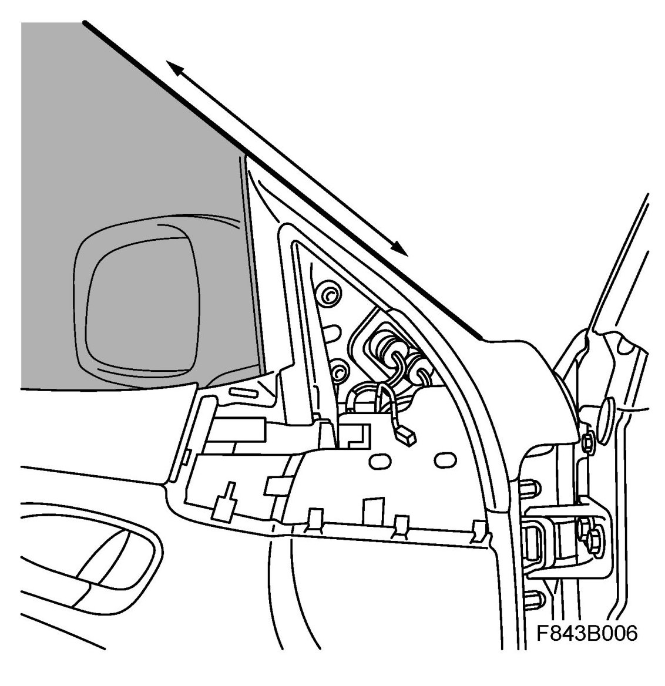
14. Adjust the door mirror base so that the door window is angled inward slightly more than the door mirror base. The seal should have a gentle S-shape where it meets the glass.
NOTE: With the door closed, press the top edge of the glass outward, causing the door mirror base and the glass to form a straight line. This can be checked by pressing the top edge of the glass outward when the door is open.
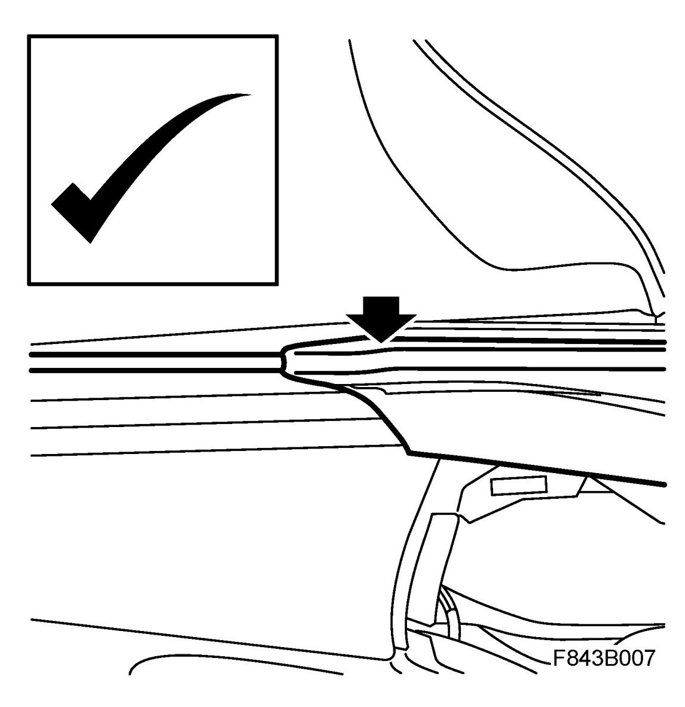
15. Tighten the four bolts.
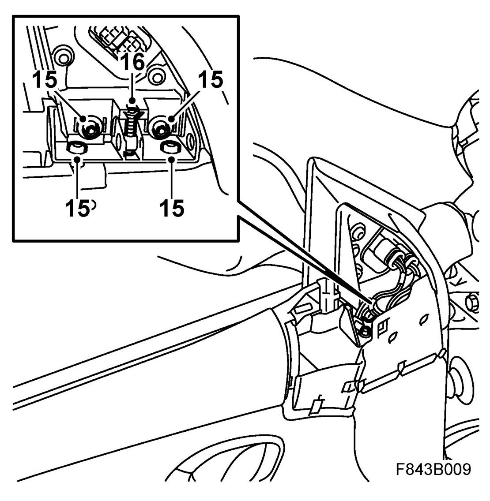
16. Insert the adjuster screw and tighten loosely so that it does not rattle.
17. Check that the door mirror and door window align with the A-pillar seal.
18. Check that the door windows and rear side windows operate smoothly by first raising the door windows and then the side windows. Lower all of the windows. Then raise the side windows followed by the door windows.
19. Remove fuse F5 in the instrument panel electrical centre (IPEC).
20. Fit the fuse.
NOTE: The pinch protection for door windows has now lost the previously programmed values. Pinch protection will be reprogrammed when the antipinch test is carried out.
21. Check using Tech 2 that the pinch protection works by carrying out the antipinch test in Tech 2 under the menu, Body - Power Windows - Driver's door/Passenger door - Miscellaneous - Anti-pinch test Convertible.
22. Driver's side: Plug in the connector for the door mirror switch.
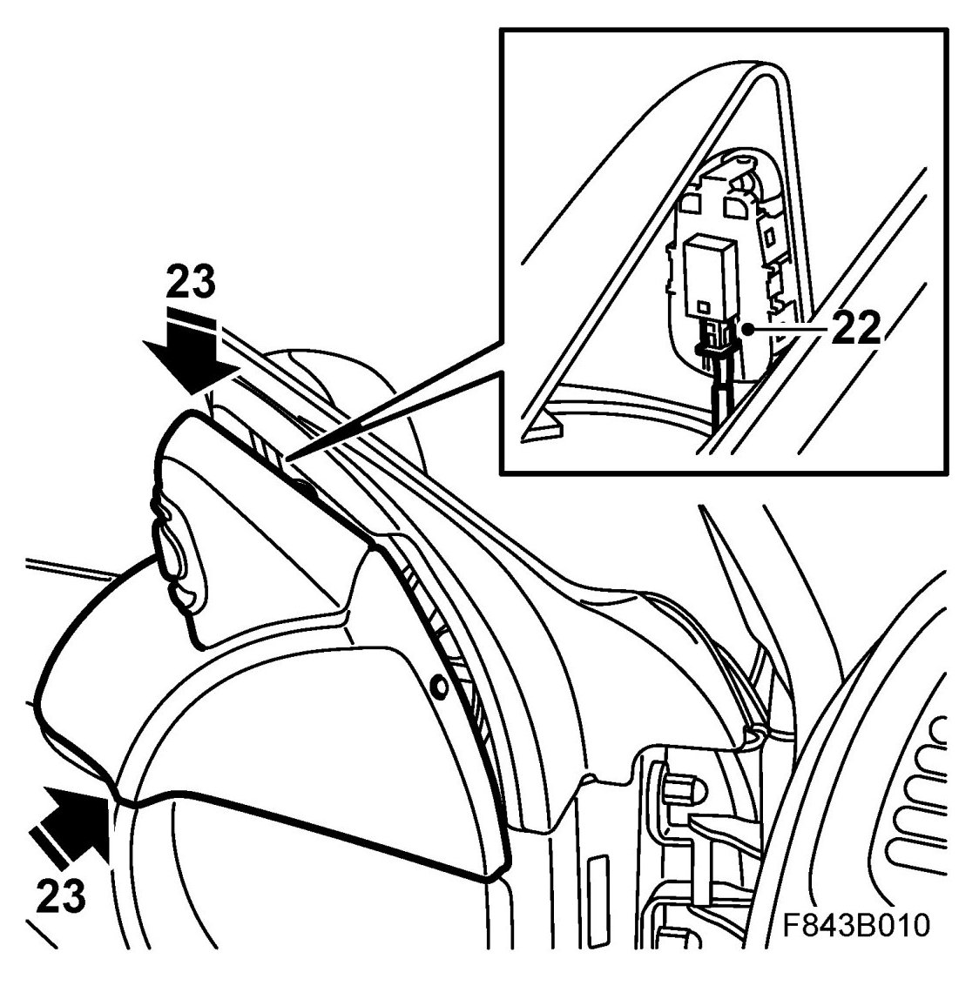
23. Fit the inner cover of the door mirror base by pressing it into place.
24. Fit the retaining bolt.
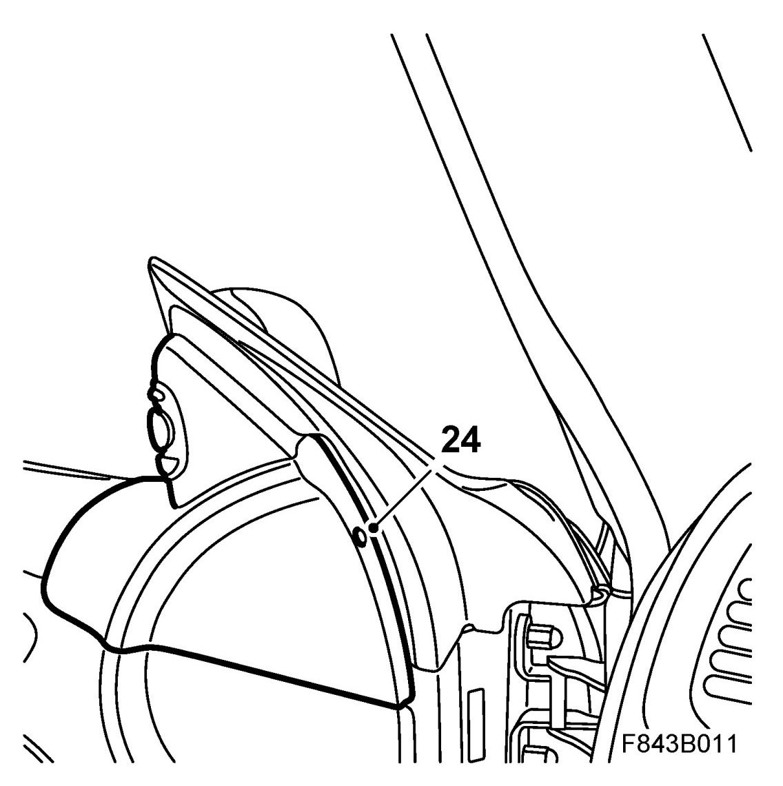